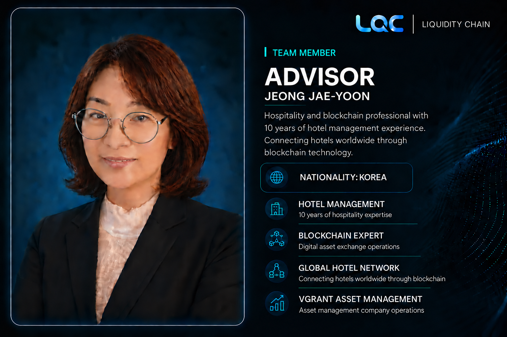

LQC Team Member
JEONG
JAE-WON
Advisor · LQC
Blockchain & Digital Asset Professional · Business Development · Liquidity & Investment Strategy
JEONG JAE-WON is a blockchain and digital-asset professional specializing in business development, exchange and liquidity ecosystems, investment strategy, and the integration of traditional businesses with blockchain infrastructure.
Her professional background also includes 10 years of hotel management and hospitality experience, with a focus on exploring connections between real-world service networks and blockchain-based digital infrastructure.
NATIONALITYKorea
CURRENT POSITIONAdvisor · LQC (Liquidity Chain)
BUSINESS EXPERIENCEBusiness development, blockchain, digital assets and investment strategy
ADDITIONAL EXPERIENCE10 years in hotel management and hospitality · Vgrant Asset Management operations
BlockchainDigital AssetsBusiness DevelopmentLiquidityCryptocurrency ExchangesInvestment StrategyAsset ManagementGlobal BusinessDeFiCross-Chain EcosystemsStrategic Partnerships